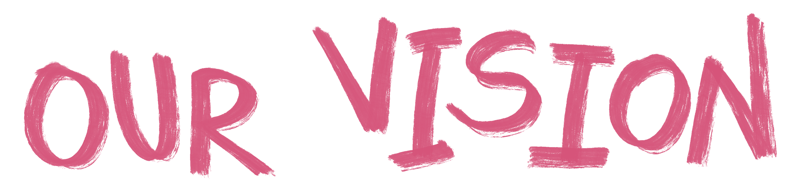
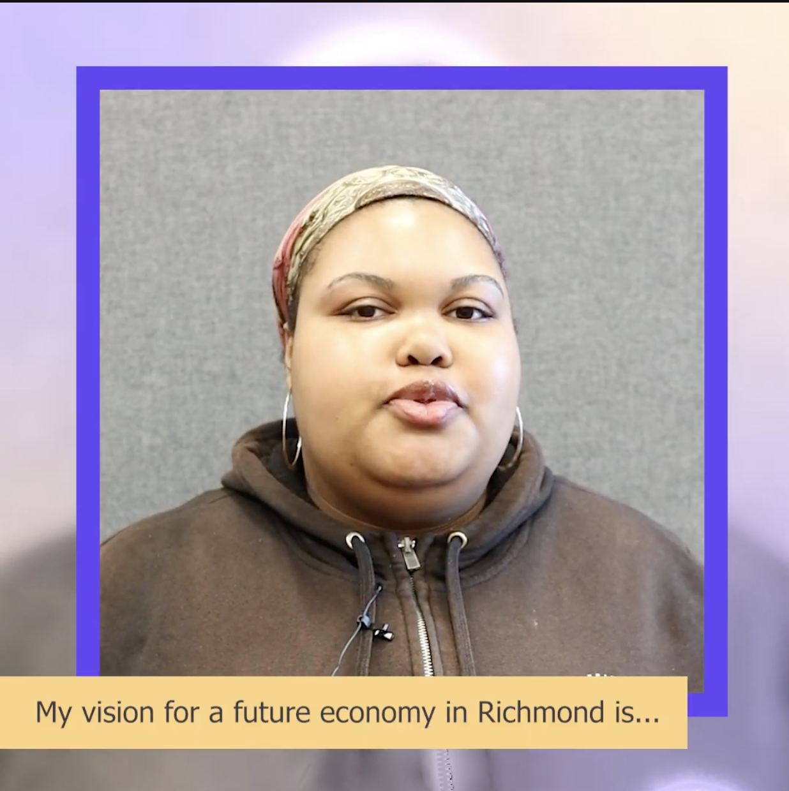
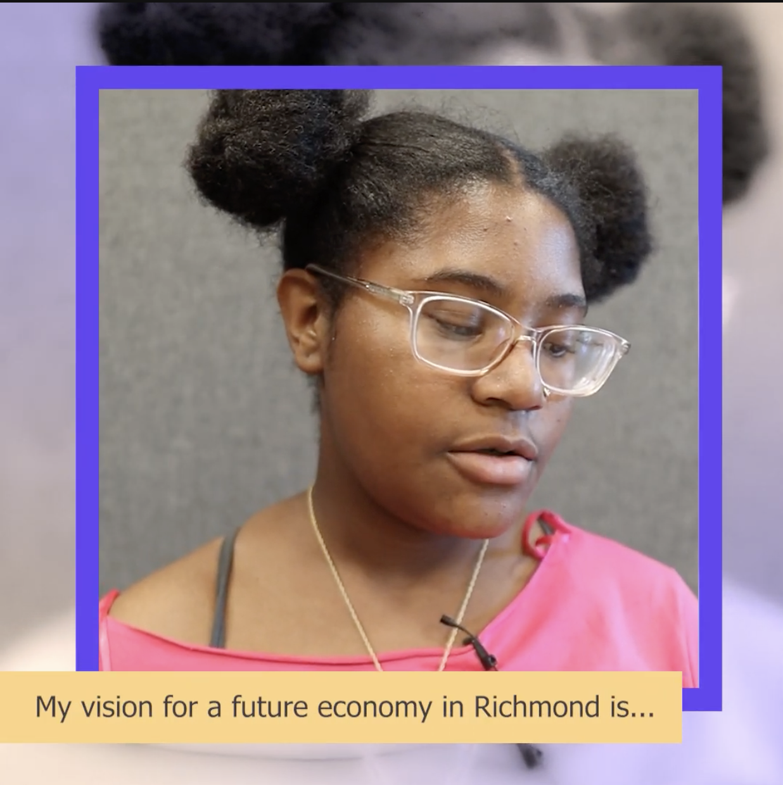
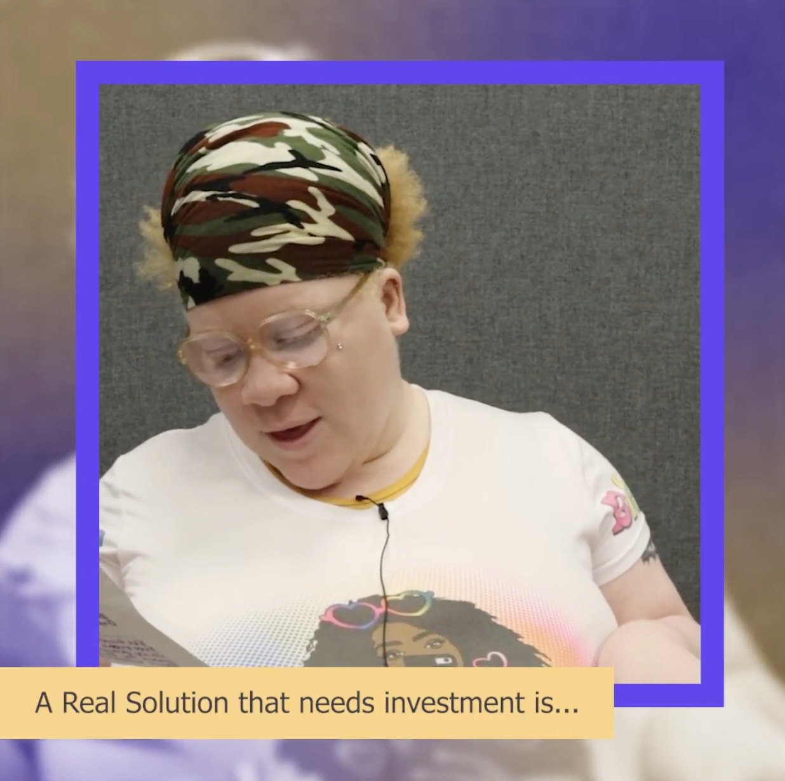
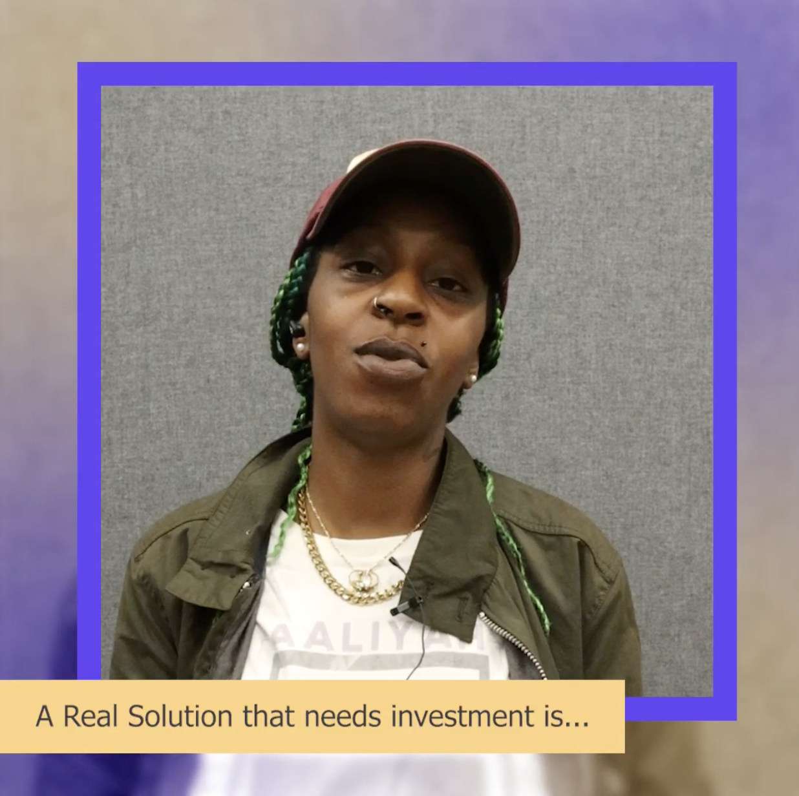
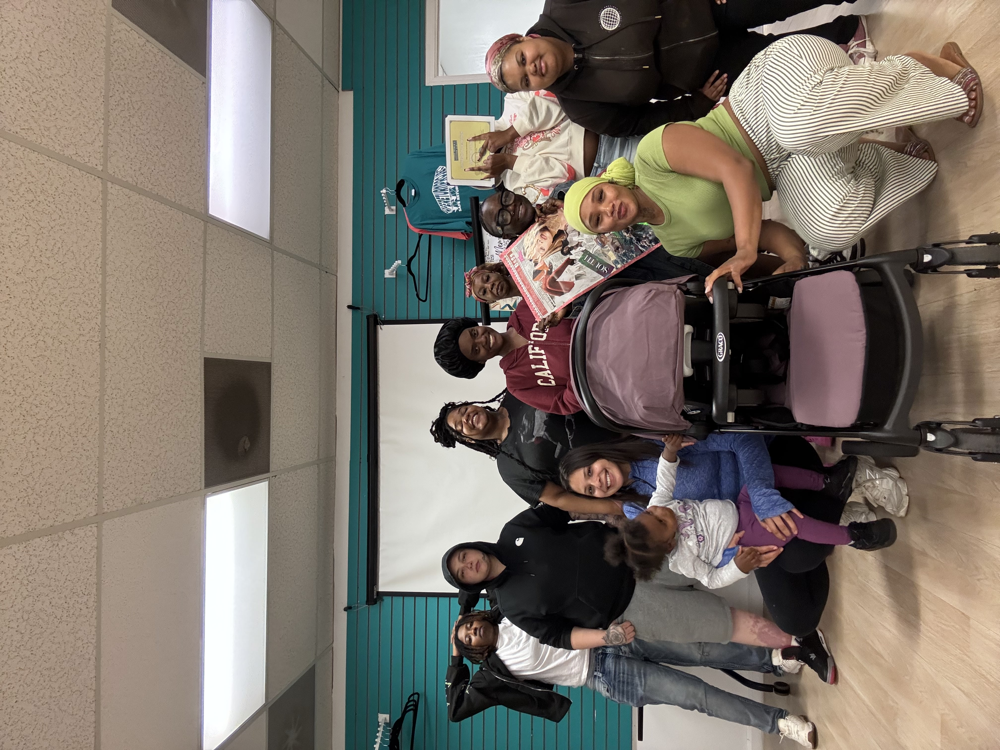
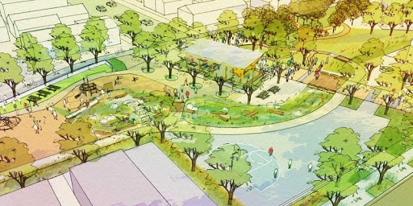

A just transition means more than replacing fossil fuels with clean energy. It means building a future where Richmond residents have real power over the land, housing, businesses, jobs, and institutions that shape our lives.
Across community conversations, residents have been clear about what that future should include: shared ownership, protection from displacement, healing from past and present harms, and investment that stays accountable to the people who live here.
Richmond Residents Share Their Vision
In community interviews, residents spoke directly about the future they want to see for Richmond's economy.

Community Interview: A Vision for Richmond

Community Interview: A Vision for Richmond

Community Interview: A Real Solution That Needs Investment

Community Interview: A Real Solution That Needs Investment
Community Ownership

Richmond residents do not want to simply be included in someone else's plan. We want the power to shape, own, and benefit from what is built here.
Ideas raised by residents include a cooperative grocery store, a childcare cooperative and café, a wellness hub, social housing, a business incubator, home electrification programs, and a reentry carpentry program.
Each idea is about more than a single service. A community-owned grocery store, for example, could provide affordable food, local jobs, neighborhood stability, and support during climate emergencies. But residents are also asking important questions: Who owns it? Who can work there? Will it reflect the cultures of the community? Will it remain accountable to residents?
The same is true for a business incubator. Residents want more than classes. They want grants, investment, long-term support, and pathways to create worker-owned businesses that can survive and grow.
The larger question is not only who will work in Richmond's future economy, but who will own and control it.
Land, Housing and Real Estate

Residents want investment in Richmond, but not at the cost of displacement.
The conversations in our workshops highlighted the need for permanently affordable housing, community land trust models, abandoned-home restoration, social housing, and stronger protections for tenants and longtime residents.
Residents in the workshops raised difficult but necessary questions: Will residents who were pushed out be able to return? Will formerly incarcerated residents face barriers to accessing housing? Will homes stay affordable over time? Will community organizations be able to compete with outside developers?
These concerns come from experience. Across the Bay Area, development described as "revitalization" has often displaced the very communities it claimed to help.
That is why ownership and decision-making cannot be treated as side issues. Who controls the land, who receives funding, and who benefits from development will determine whether Richmond's transition meets the vision. The questions of ownership and governance are not secondary to the climate transition — they are the transition.
Community Healing

A just transition is inseparable from healing.
Residents repeatedly called for mental health care, trauma-informed services, youth mentorship, support for survivors of violence, family stability, and opportunities for people returning from incarceration.
They also stressed that job and training programs must respond to people's real lives. That means including childcare, transportation, disability access, health support, and other services that make participation possible.
Economic exclusion in Richmond has never been solely about a lack of jobs. It has also been shaped by pollution, criminalization, unstable housing, racialized policing, untreated trauma, and gaps in community support.
The proposed Black Wellness Center reflects a broader vision of change — one that connects mental, physical, emotional, and financial well-being with community power and economic transformation.